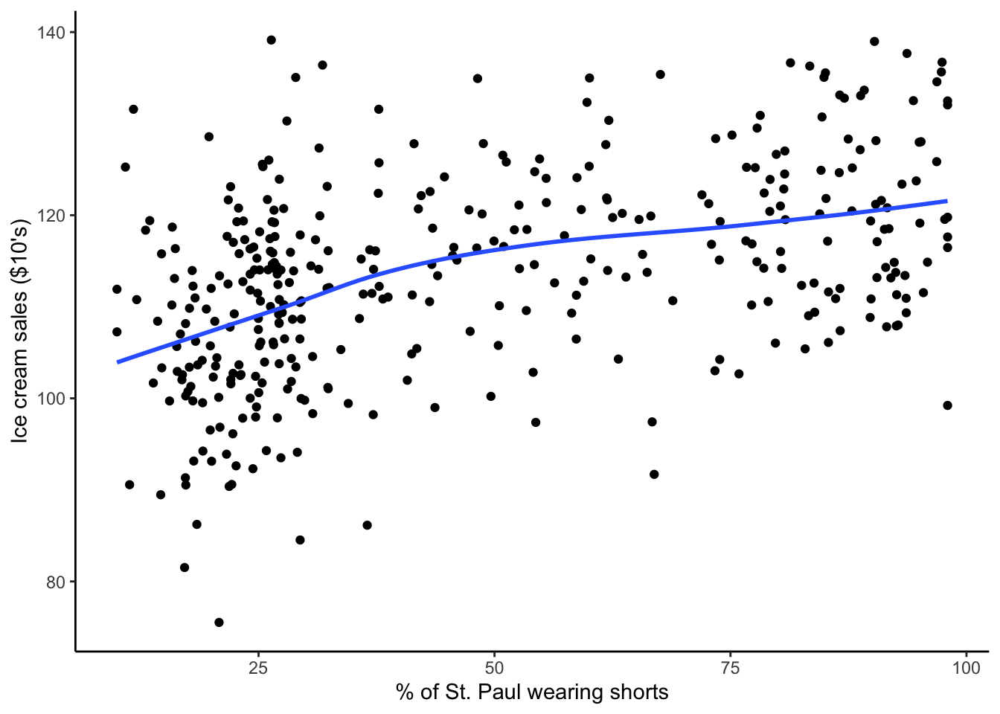
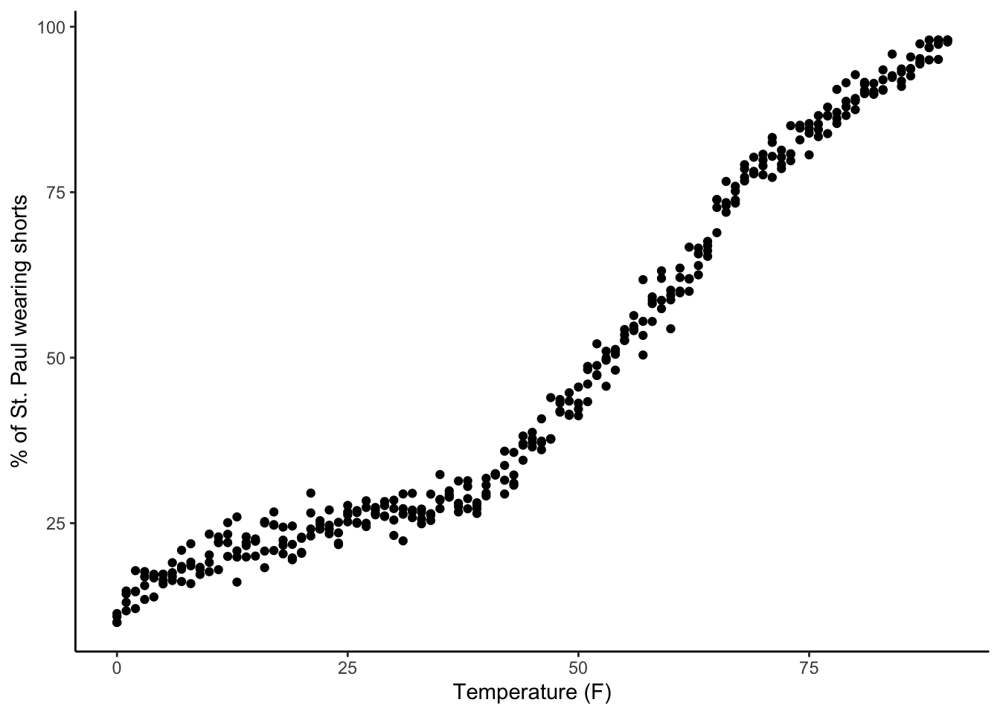
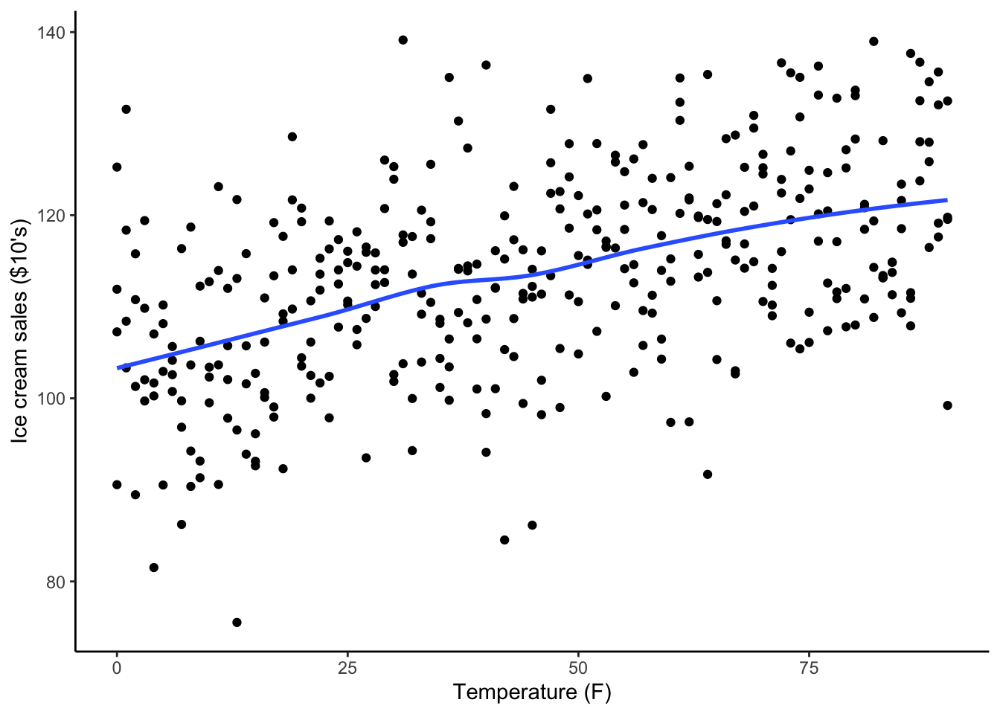

Explain what is meant by the term causal identification
Think about the data-generating process (DGP) in a given context to understand its impact on causal identification
Get a sense for different approaches to causal identification that we will explore in this course
Review
Average causal effects
Suppose we are studying the effect of a mental health program for expecting mothers and fathers. The treatment is participation in the program vs. not. The outcome is a yes/no occurrence of postpartum depression within the first year of the infant’s life. We estimate the average causal effect \(E[Y^{a=1} - Y^{a=0}]\) to be -0.1.
How can we interpret this effect?
Research questions
Coming up with a question is easy. Just ask any five-year-old and they can provide you with dozens. Coming up with a good research question is much harder.
What’s the difference? The difference, at least in the case of quantitative empirical research, is that a research question is a question that can be answered, and for which having that answer will improve your understanding of how the world works.
Asking “how” (as in “how do we do better?”) naturally leads to “Should we…” questions:
How can we mitigate the effects of climate change?
Should we implement a plastic tax?
Identification: warm-up
When we say “this variation has identified the effect we’re interested in”, which of the following is the best definition of the term identified? Explain why you think your chosen response is the best definition and why the others are not.
We’ve generated the data by conducting a controlled experiment in which treatment is randomly assigned.
In the data generating process, the only reason why we see variation in the outcome variable is because of the treatment variable.
The relationship we are looking at in the data actually tests a hypothesis.
In the variation we use, there’s no reason we’d see any relationship at all except for the effect we’re interested in.
Isolating variation
Example: A child’s shoe size is a great predictor of their reading ability
We can quantify covariation in shoe size and reading ability with measures like the correlation coefficient, slope and its confidence interval
When we think about the underlying data-generating process, we see that the totality of this covariation also encompasses the covariation in:
age and shoe size
age and reading ability
We can isolate a part of this covariation by holding age constant and then looking at the relationship between shoe size and reading ability
There are other ways to isolate variation that we will explore today and throughout the semester.
Exercises
A note about these exercises
Today is an intuition-building and exploration day. If you feel uncertain about your responses, that’s ok! Through these exercises, we are previewing cool methods to come.
Exercise 1
We are interested in the effect of mindful breathing practices on stress levels.
Part a
Suppose we tried to estimate this effect by surveying people at Macalester. We ask them if they engage regularly in mindful breathing practices and to report their general stress levels on a 1-10 scale (1 = lowest stress, 10 = highest stress).
Do you think we would be identifying the causal effect by comparing the mean stress levels in those who do regularly use mindful breathing with those who don’t? What aspects of the data generating process (DGP) are relevant for your response?
Part b
Now suppose that we were able to find 500 people with a self-reported stress level of 6 who don’t already engage in mindful breathing. The Hamre Center has resources to enroll 250 people in a 3-month mindful breathing program. They decide to randomly select the 250 participants from the 500 and measure the stress levels of all 500 people after the 3-month program.
Do you think we would we be identifying the causal effect by comparing the mean stress levels after 3 months in those enrolled in the program with those who weren’t enrolled? What aspects of the data generating process (DGP) are relevant for your response?
Exercise 2
We notice that ice cream sales in St. Paul are correlated with the percentage of the population wearing shorts and wonder if there is a causal relationship between the two.
Part a
In this context, what aspects of the data generating process do you think are most important to keep in mind? What alternative explanations can you come up with?
Part b
Recall that the main idea with identification is to find variation that we want to use and get rid of variation that we don’t want.
For this context, a number of plots and linear regression model output are shown below. Explain how these results show desired variation, undesired variation, and the process of identification by getting rid of undesired variation.
ggplot(ice_cream_data, aes(x = perc_shorts, y = ice_cream_sales)) +geom_point() +geom_smooth(se =FALSE) +labs(x ="% of St. Paul wearing shorts", y ="Ice cream sales ($10's)") +theme_classic()
`geom_smooth()` using method = 'loess' and formula = 'y ~ x'

Code
ggplot(ice_cream_data, aes(x = temp, y = perc_shorts)) +geom_point() +labs(x ="Temperature (F)", y ="% of St. Paul wearing shorts") +theme_classic()

Code
ggplot(ice_cream_data, aes(x = temp, y = ice_cream_sales)) +geom_point() +geom_smooth(se =FALSE) +labs(x ="Temperature (F)", y ="Ice cream sales ($10's)") +theme_classic()
`geom_smooth()` using method = 'loess' and formula = 'y ~ x'

Code
lm(ice_cream_sales ~ perc_shorts, data = ice_cream_data) %>%summary()
Call:
lm(formula = ice_cream_sales ~ perc_shorts, data = ice_cream_data)
Residuals:
Min 1Q Median 3Q Max
-32.941 -6.820 0.384 6.448 29.639
Coefficients:
Estimate Std. Error t value Pr(>|t|)
(Intercept) 104.57894 1.04068 100.491 <2e-16 ***
perc_shorts 0.18668 0.01886 9.896 <2e-16 ***
---
Signif. codes: 0 '***' 0.001 '**' 0.01 '*' 0.05 '.' 0.1 ' ' 1
Residual standard error: 9.931 on 362 degrees of freedom
Multiple R-squared: 0.2129, Adjusted R-squared: 0.2108
F-statistic: 97.93 on 1 and 362 DF, p-value: < 2.2e-16
Code
lm(ice_cream_sales ~ perc_shorts + temp, data = ice_cream_data) %>%summary()
Call:
lm(formula = ice_cream_sales ~ perc_shorts + temp, data = ice_cream_data)
Residuals:
Min 1Q Median 3Q Max
-30.9542 -6.6926 -0.0641 6.3933 28.0907
Coefficients:
Estimate Std. Error t value Pr(>|t|)
(Intercept) 104.26394 1.02618 101.603 < 2e-16 ***
perc_shorts -0.06449 0.07000 -0.921 0.35748
temp 0.27363 0.07354 3.721 0.00023 ***
---
Signif. codes: 0 '***' 0.001 '**' 0.01 '*' 0.05 '.' 0.1 ' ' 1
Residual standard error: 9.76 on 361 degrees of freedom
Multiple R-squared: 0.242, Adjusted R-squared: 0.2378
F-statistic: 57.63 on 2 and 361 DF, p-value: < 2.2e-16
Exercise 3
We are interested in the effect of a résumé writing workshop (Treatment) on adults’ ability to secure a new job (Outcome). Suppose that we have thought carefully about the data-generating process and determined that age, education level, income, employment status, and marital status are the most important factors in alternative explanations.
Part a
We have data on 10 adults (5 who took the workshop, and 5 who didn’t):
# A tibble: 10 × 8
ID Age Education Income Employment MaritalStatus Treatment Outcome
<dbl> <dbl> <chr> <chr> <chr> <chr> <dbl> <dbl>
1 1 25 HighSchool Low Employed Single 1 0
2 2 30 College Medium Employed Married 1 1
3 3 28 HighSchool Low Unemployed Single 1 0
4 4 35 College High Employed Married 1 1
5 5 40 College High Unemployed Married 1 0
6 6 22 HighSchool Low Employed Single 0 1
7 7 30 HighSchool Medium Unemployed Married 0 0
8 8 45 College High Employed Single 0 1
9 9 50 HighSchool Low Employed Single 0 0
10 10 30 College Medium Employed Married 0 1
For case 2, we observe the potential outcome under treatment \(Y^{a=1}\). Do you think that we might be able to directly guess this unit’s counterfactual outcome \(Y^{a=0}\) by using information from another case? Why or why not?
What about for case 1?
Part b
Thinking about the process that you went through in part (a), do you think this process gets easier with more variables? Why or why not?
Exercise 3 context (read after completion)
I used ChatGPT to generate the example dataset in Part a. This is the prompt I used:
Can you give me an example dataset with 10 cases that has one age variable, 4 categorical socioeconomic variables, and one binary outcome variable? This dataset is intended to provide an example of the matching causal inference method to students. This dataset should have some exact and approximate matches.
Exercise 4
The following 2 figures come from a study of the effect of attending a state flagship university on earnings a few years after college graduation. Flagship state universities tend to be the premier public colleges in the state. They are often the first college to have been established in the state and the most research-intensive with more resources.
In the first figure, the x-axis indicates the number of SAT points away from the admissions cutoff for the state flagship (a recentered SAT score). (The cutoff is a strongly suggested but not a hard cutoff for admission.) Each point shows the enrollment rate at the flagship university for that recentered SAT score. The solid lines show nonlinear trends fitted separately to the left and to the right of x=0. The t=10.57 indicates a test statistic for a hypothesis test on the jump at x=0.
In the second figure, the x-axis is the same, and the y-axis represents the natural log earnings after calendar year, years of work experience, and graduation year have been accounted for (which is what the “(Residual)” part of the axis label is indicating). (More details are described in this section of our Mixtape textbook.) The z=3.01 indicates a test statistic for a hypothesis test on the jump at x=0.
What story do you think the author is trying to tell with these figures?
If the admissions cutoff did not exist, what do you think the relationship between enrollment rate and SAT points would look like? What about the relationship between earnings and SAT points?
How different do you think students just below and just above the admission cutoff are? How could this be helpful in isolating only desired variation?
Exercise 5
This paper looked at the effect of Florida’s 2005 “Stand Your Ground” (SYG) law on homicide rates. The law gave citizens the right to use lethal force in self-defense in public places where they felt threatened.
Take a look at panel A from this figure from the paper which shows homicide rates in Florida and comparison states over time.
What story do you think the author is trying to tell with this figure?
Do you think that the trends in homicide rates in Florida and the comparison states are similar before the SYG law was enacted in 2005? Why might similarity be desirable?
Draw or describe what you guess might have happened in Florida had it not enacted the SYG law. How is this related to identification of the causal effect of the SYG law on homicide rates?